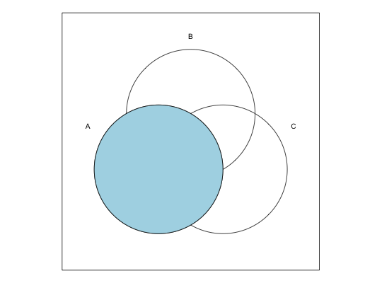

getZones(ints, nofsets, ellipse = FALSE)
This function uses a metacommand to calculate the shape of a specific zone or a list of zones.
A "zone" is a union of set intersections. There are exactly 2^k intersections
in a Venn diagram, where k is the number of sets. To highlight an entire set,
we need a union of all possible intersections which form that set.
In a 3 sets diagram, the (overall) first set is composed by four intersections:
100 for what is in the first set but outside sets 2 and outside set 3
101 for the intersection between sets 1 and 3, outside set 2
110 for the intersection between sets 1 and 2, outside set 3
111 for the intersection between all three sets.
The decimal representation for these intersections is calculated as:
100 = 2^2 = 4
101 = 2^2 + 2^0 = 5
110 = 2^2 + 2^1 = 6
111 = 2^2 + 2^1 + 2^0 = 7
The argument ellipse retrieves the data from the shape of an ellipse, and it only
works with 4 and 5 sets.
venn("1--")zone <- getZones(4:7, 3) # a list of length 1 polygon(zone[[1]], col="lightblue")
# for 5 sets, the content of the 5th set but not in the first set is a # list of two zones venn("0---1")zones <- getZones(seq(1, 15, by = 2), 5) # this time a list of length 2 # (re)coloring the first zone (union) polygon(zones[[1]], col="lightblue")# and the second zone (union) polygon(zones[[2]], col="lightblue")